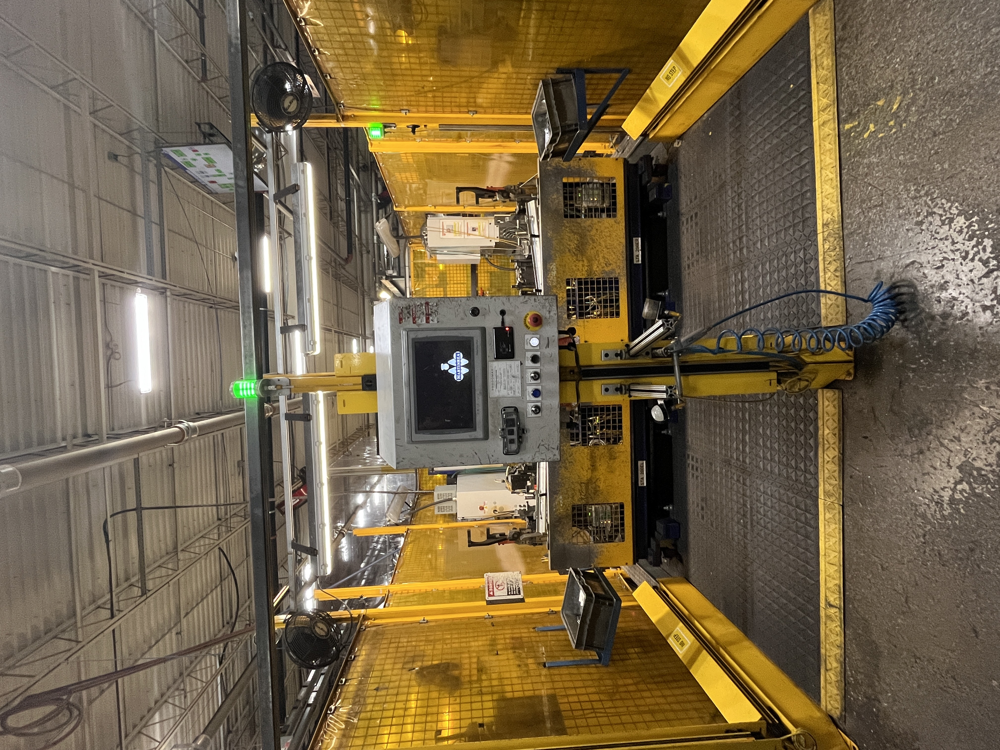
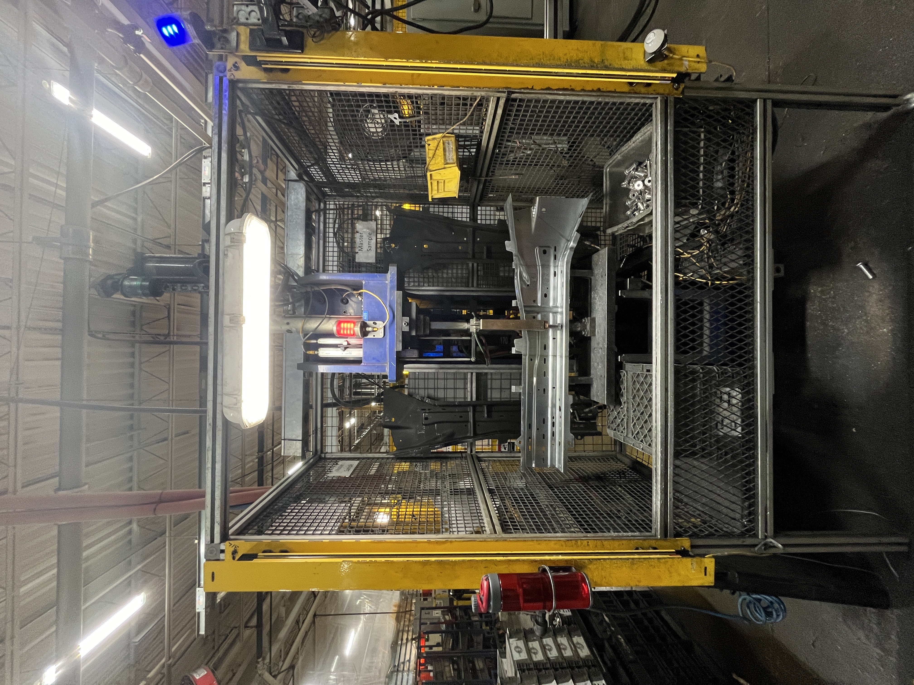
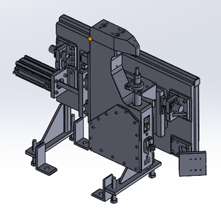
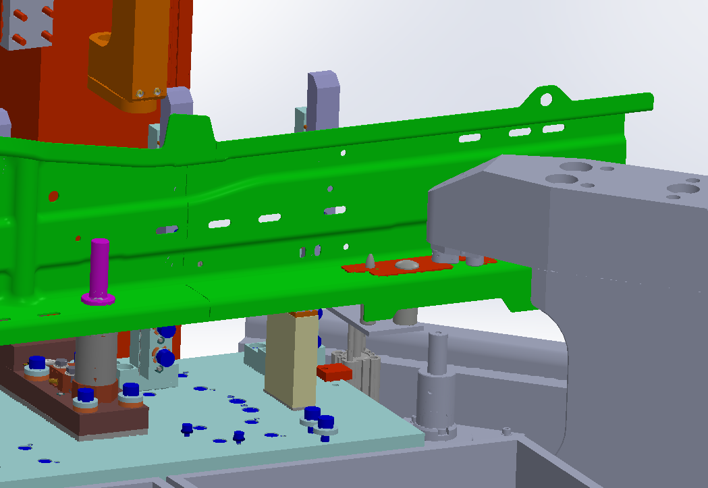
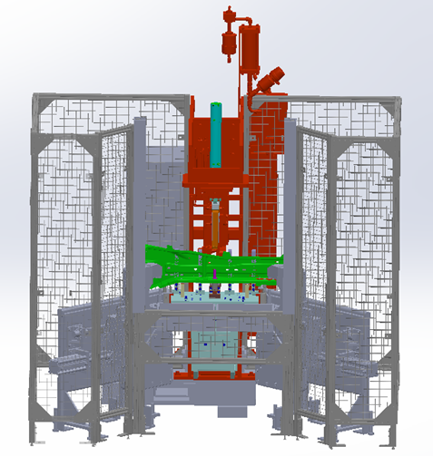

Martinrea International
Station Combination
Consolidating two manufacturing operations into a single production cell.
Role
Manufacturing Engineering Intern
Focus
Equipment Design · Process Optimization · Automation
Tools
SOLIDWORKS · Sensors · Pneumatics
Project Overview
Martinrea’s Jeep Cherokee front rails passed through two separate substations before entering the main production line. I worked on consolidating these operations into a single station, integrating new clinching equipment, part locating, sensing, and guarding to support both left and right front-rail configurations
01 The Existing Process
Two separate manufacturing operations created an opportunity for consolidation.
Front rails passed through separate bracket-attachment and pipe-nut welding substations before entering the main manufacturing line. This duplicated equipment, labor, and floor-space requirements and created an opportunity for consolidation.


02 Design Requirements
Combining the operations required more than simply fitting another machine into the cell.
Equipment Integration
Integrate the new clinching equipment within the constraints of the existing manufacturing station.
Part Variation
Support both left-hand and right-hand front rails within the combined process.
Process Verification
Detect bracket presence and support reliable execution of the combined operation.
Safety & Access
Modify the station layout and guarding around the new equipment while maintaining appropriate operator separation.
03 Equipment Development
Developing and integrating a custom clinching system for the consolidated manufacturing cell.
-
I worked with BTM to define the functional requirements, constraints, and acceptance criteria for the custom clinching system. The equipment had to reliably attach the brackets while meeting production cycle-time requirements and fitting within the limited space of the existing manufacturing cell.
Through design reviews, I evaluated proposed concepts for compatibility with the part geometry, surrounding equipment, operator and maintenance access, utilities, and applicable machine-safety requirements. I worked with BTM through design iterations and approved the final equipment design for development.
-
Representative production parts were sent to BTM during development to verify that the proposed clinching process was compatible with the actual material and part geometry. Trials were used to establish whether the equipment could consistently form the required clinch without introducing unacceptable part damage or deformation.
The resulting joints were then mechanically evaluated, including peel testing, to verify that the clinch strength was appropriate for the application before the equipment progressed toward final acceptance.
-
In parallel with equipment development, I reviewed how the new system would physically integrate into the existing manufacturing cell. This included confirming the available equipment envelope, interfaces with surrounding machinery, production access, serviceability, and the utilities required to operate the presses.
The presses were incorporated into a rail-mounted arrangement so they could move into the required production position while maintaining access for adjustment and servicing. I coordinated the factory-side requirements so the cell would be prepared for installation when the equipment arrived.
-
Before shipment, I traveled to BTM to complete the equipment buyoff and evaluate the finished system under representative operating conditions. I observed the equipment running production-representative parts and verified the clinching process, machine functionality, safety features, and key requirements against the agreed acceptance criteria.
Any remaining issues could then be addressed before shipment, reducing installation risk and helping ensure the equipment arrived at the factory ready for production integration.

01 Requirements & Design
I worked with BTM to define the functional requirements, constraints, and acceptance criteria for the custom clinching system. The equipment had to reliably attach the brackets while meeting production cycle-time requirements and fitting within the limited space of the existing manufacturing cell.
Through design reviews, I evaluated proposed concepts for compatibility with the part geometry, surrounding equipment, operator and maintenance access, utilities, and applicable machine-safety requirements. I worked with BTM through design iterations and approved the final equipment design for development.
04 Part Location & Error Proofing
Supporting multiple part variants while verifying the correct production condition.
Location & Verification
Because both left-hand and right-hand rails ran through the station, I developed a pin-based locating approach that correctly positioned either part configuration within the combined process. Laser sensing verified bracket presence before processing, adding error proofing to the redesigned station.

05 Guarding & Station Integration
Integrating the new equipment into an existing production environment.
Integrating the clinching equipment required changes to the station perimeter and operator access. I redesigned the fencing around the new press arrangement while maintaining separation between personnel and production equipment.

06 System in Action
See the completed system perform the automated sequence.
07 Results
$225K
Annual Savings
450 sq ft
Floor Space Freed
1
Operator Reduced
$40K
Robot Freed for Reuse
Sustainability Impact
7.125 kW/h
Electricity Reduction
114 gal / Year
Water Reduction
2,184 / Year
Weld Caps Reduced
08 Engineering Takeaways
Design at the System Level
Changing one manufacturing operation affected equipment layout, part locating, sensing, guarding, operator access, and the surrounding production process. I learned to evaluate equipment changes as part of the complete manufacturing system rather than solving each problem in isolation
DESIGN AROUND COMPETING CONSTRAINTS
The station needed to maintain a compact footprint while still providing enough space for the operator to load parts efficiently. Designing the presses to retract during loading and move into position for clinching taught me how equipment motion can resolve competing requirements between process needs, operator access, and floor space
Connect Engineering to Business Impact
This project showed me how relatively small equipment and process changes can create significant business impact. Consolidating the operations reduced labor, floor space, capital requirements, utility consumption, and consumable use while simplifying the overall manufacturing process
Engineering Methods
SOLIDWORKS · Equipment Design · Fixture Design · Pneumatics · Sensors · Manufacturing Automation · Guarding · Process Optimization